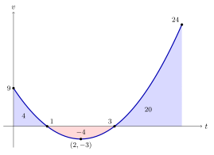
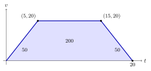
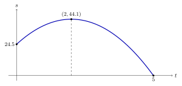
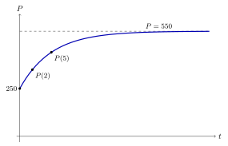
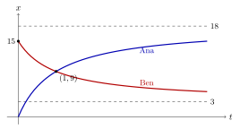
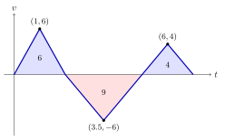

6.1 Velocity and Net Change¶
Guiding question
If you know how fast something is changing, can you find out how much it has changed? Differentiation goes from a quantity to its rate; integration goes back. This section uses the Fundamental Theorem of Calculus from Calculus I to turn rates into totals. We start with the case you can feel: an object moving along a line, whose velocity is the rate of change of its position. We separate two questions that sound alike but are not: how far did it end up from where it started (displacement) and how far did it actually travel (distance traveled). We then find the position from the velocity, and the velocity from the acceleration. The same idea works for any quantity with a known rate: the water in a reservoir, a population, the cost of making more books. Each time, accumulating the rate gives the net change, and the net change plus the starting value gives the future value. The idea behind this is slice-and-sum, which is also how the rest of this chapter finds areas, volumes and lengths.
By the end of this section you should be able to:
-
distinguish position, displacement and distance traveled, and compute displacement and distance traveled from a velocity function or from a velocity graph;
-
find the position function from the velocity and the initial position, and the velocity from the acceleration and the initial velocity, by an antiderivative or by an integral from \(0\) to \(t\);
-
compute the net change and the future value of any quantity from its rate of change, with correct units;
-
handle rates that change sign, rates given in pieces, and rates whose total stays bounded for all time;
-
prove each of the theorems of this section.
Position, displacement and distance traveled¶
An object moves along a line, say a straight road, with a fixed direction called positive. Its position at time \(t\) is a number \(s(t)\): the signed distance from a chosen origin. Its velocity is \(v(t)=s'(t)\) (a number that is positive when it moves in the positive direction and negative when it moves the other way), and its speed is \(\abs{v(t)}\). Throughout this section we assume that \(s\) is differentiable and that \(v=s'\) is continuous.
Definition 6.1.1: Displacement and distance traveled
Let \(a<b\). The displacement of the object over the time interval \([a,b]\) is the signed number \(s(b)-s(a)\): the change in position, positive if it ends up on the positive side of where it started and negative otherwise.
To define the distance traveled, cut \([a,b]\) into \(n\) pieces by times \(a=t_0<t_1<\dots<t_n=b\). During the \(k\)th piece the object moves from \(s(t_{k-1})\) to \(s(t_k)\), so it covers at least the distance \(\abs{s(t_k)-s(t_{k-1})}\), with the direction ignored. The distance traveled is the limit of the sums
as the longest piece shrinks to \(0\) (Theorem 6.1.3 shows that the limit exists).
The distance traveled is what the odometer of a car reads: it only increases. The displacement is what you get from the position at the end minus the position at the beginning: it can be positive, negative or zero. If you walk \(3\) blocks east and then \(3\) blocks west, your displacement is \(0\) but you have traveled \(6\) blocks.
Theorem 6.1.2: Displacement is the integral of the velocity
If \(s\) is differentiable with a continuous derivative \(v=s'\) on \([a,b]\), then the displacement is
Proof. By definition \(v=s'\), so \(s\) is an antiderivative of the continuous function \(v\) on \([a,b]\). The Fundamental Theorem of Calculus (Part 2, from Calculus I) says that \(\int_a^bv(t)\,dt=s(b)-s(a)\) for every antiderivative \(s\) of \(v\). ◻ ∎
Geometrically, the displacement is the net area between the graph of \(v\) and the \(t\)-axis: the area above the axis counts \(+\) and the area below counts \(-\). The distance traveled counts all the area as positive.
Theorem 6.1.3: Distance traveled is the integral of the speed
Under the same assumptions, the sums in Definition 6.1.1 converge as the longest piece shrinks to \(0\), and the distance traveled is
Proof. On the \(k\)th piece \([t_{k-1},t_k]\) the function \(s\) is continuous and differentiable, so the Mean Value Theorem (Calculus I) gives a number \(t_k^*\) in \((t_{k-1},t_k)\) with
Take absolute values: \(\abs{s(t_k)-s(t_{k-1})}=\abs{v(t_k^*)}\,\Delta t_k\), because \(\Delta t_k>0\). Therefore
which is a Riemann sum for the function \(\abs{v}\) on \([a,b]\) (with the sample points \(t_k^*\)). The function \(\abs{v}\) is continuous, because \(v\) is, so it is integrable, and its Riemann sums converge to \(\int_a^b\abs{v(t)}\,dt\) as the longest piece shrinks to \(0\), whatever the sample points are. ◻ ∎
How do we compute \(\int_a^b\abs{v}\) when \(v\) changes sign? A continuous function can change sign only where it is zero (the Intermediate Value Theorem), so between two consecutive zeros of \(v\) it is either always positive or always negative. There \(\abs{v}=v\) or \(\abs{v}=-v\), and the integral of \(\abs v\) over the piece equals \(\abs{\text{displacement over that piece}}\).
Procedure 6.1.4: Displacement and distance traveled from a velocity function
Let \(v\) be continuous on \([a,b]\).
-
Solve \(v(t)=0\) on \([a,b]\). The zeros \(a=c_0<c_1<\dots<c_m=b\) (with \(a\) and \(b\) added) cut the interval into pieces on which \(v\) has one sign. Test one point in each piece to find the sign.
-
Find an antiderivative \(F\) of \(v\) and check it by differentiating.
-
The displacement is \(F(b)-F(a)\).
-
The distance traveled is \(\sum_{j=1}^m\abs{F(c_j)-F(c_{j-1})}\): the absolute value of the displacement over each piece, added.
-
Check: the distance is at least the absolute value of the displacement (Theorem 6.1.6 below), and the units are units of length.
Example 6.1.5: Displacement and distance for a quadratic velocity
A particle moves along a line with velocity \(v(t)=3t^2-12t+9\) (in m/s) for \(0\le t\le5\) (in s). Find its displacement and the distance it travels, and describe the motion.
Solution. Step 1: the sign of \(v\). Factor, taking out the \(3\) first: \(3t^2-12t+9=3(t^2-4t+3)=3(t-1)(t-3)\). The zeros are \(t=1\) and \(t=3\), both in \([0,5]\), so the pieces are \([0,1]\), \([1,3]\) and \([3,5]\). At \(t=0\): \(v(0)=9>0\). At \(t=2\): \(v(2)=3\cdot4-24+9=-3<0\). At \(t=4\): \(v(4)=48-48+9=9>0\). (Each piece has one sign, since \(v\) can change sign only at a zero.) Step 2: an antiderivative. By the power rule, \(F(t)=t^3-6t^2+9t\) has \(F'(t)=3t^2-12t+9=v(t)\). Step 3: values of \(F\) at the endpoints and zeros. \(F(0)=0\), \(F(1)=1-6+9=4\), \(F(3)=27-54+27=0\), \(F(5)=125-150+45=20\). Step 4: displacement. \(\int_0^5v\,dt=F(5)-F(0)=20-0=20\) m. Step 5: distance traveled. On each piece the distance is the absolute value of the displacement: \(\abs{F(1)-F(0)}=4\), \(\abs{F(3)-F(1)}=\abs{-4}=4\), \(\abs{F(5)-F(3)}=20\). The distance is \(4+4+20=28\) m. Conclusion and check. The particle moves \(4\) m in the positive direction, then \(4\) m back to where it started, then \(20\) m in the positive direction: displacement \(20\) m, distance \(28\) m. As required, \(28\ge\abs{20}\). The figure below shows the net area: the three regions have areas \(4\), \(4\) and \(20\); the middle one counts as \(-4\) in the displacement and \(+4\) in the distance.

Figure. The graph of \(v(t)=3t^2-12t+9\). Displacement \(=4-4+20=20\); distance traveled \(=4+4+20=28\).
Knowledge Check 6.1.1: Out and back
A runner jogs \(3\) km east along a straight road, turns around, and jogs \(5\) km west. Taking east as the positive direction, what are her displacement and the distance she has traveled?
Theorem 6.1.6: The displacement never exceeds the distance
If \(v\) is continuous on \([a,b]\), then
with equality if and only if \(v\ge0\) on all of \([a,b]\) or \(v\le0\) on all of \([a,b]\).
Proof. For every \(t\) we have \(-\abs{v(t)}\le v(t)\le\abs{v(t)}\). Integrating (the integral preserves inequalities) gives \(-\int_a^b\abs v\le\int_a^bv\le\int_a^b\abs v\), which is the inequality.
If \(v\ge0\) on \([a,b]\), then \(\abs v=v\) and both sides are equal. If \(v\le0\), then \(\abs v=-v\) and \(\abs{\int v}=\abs{-\int\abs v}=\int\abs v\).
Conversely, suppose equality holds. Then \(\int_a^bv=\int_a^b\abs v\) or \(\int_a^bv=-\int_a^b\abs v\). In the first case let \(g=\abs v-v\). It is continuous, \(g\ge0\), and \(\int_a^bg=0\). If \(g(c)>0\) for some \(c\), then by continuity \(g>g(c)/2\) on a subinterval of length \(\delta>0\), so \(\int_a^bg\ge\delta\,g(c)/2>0\), a contradiction. So \(g\equiv0\), that is \(\abs v=v\) and \(v\ge0\). In the second case apply the first case to \(-v\) (which has \(\abs{-v}=\abs v\)): it gives \(-v\ge0\), that is \(v\le0\). ◻ ∎
Pause and think 6.1.1: Zero displacement
Describe a motion on \([0,4]\) whose displacement is \(0\) but whose distance traveled is \(12\). What does the graph of \(v\) look like? Can the distance be \(0\) if the displacement is \(0\)?
Answer and discussion
For instance the object moves forward at the velocity \(v=3\) for \(2\) s (distance \(6\)) and backward at \(v=-3\) for \(2\) s (distance \(6\)): displacement \(6-6=0\), distance \(6+6=12\). The graph of \(v\) has equal areas above and below the \(t\)-axis. The distance can be \(0\) with displacement \(0\) only if \(\int_0^4\abs v=0\), and by the equality part of Theorem 6.1.6’s proof (\(\abs v\ge0\) continuous with integral \(0\)), \(v\equiv0\): the object never moves.
Position from velocity¶
The displacement needs only the velocity. To say where the object is at time \(t\), we also need to know where it started.
Theorem 6.1.7: Position from velocity
Let \(v=s'\) be continuous on \([0,\infty)\) (or on an interval starting at \(0\)). Then for every \(t\ge0\),
Proof. Apply Theorem 6.1.2 on the interval \([0,t]\): \(\int_0^tv(x)\,dx=s(t)-s(0)\). Add \(s(0)\) to both sides. ◻ ∎
In words: position at time \(t\) = initial position + displacement over \([0,t]\). The same holds with any starting time \(t_0\) in place of \(0\).
A dummy variable
In \(s(t)=s(0)+\int_0^tv(x)\,dx\) the letter \(t\) is the upper limit, so it cannot also be the variable of integration. Use another letter, here \(x\). The integral \(\int_0^tv(t)\,dt\) is ambiguous and should not be written.
There are two ways to find \(s(t)\): (1) the antiderivative method: \(s(t)=\int v(t)\,dt=V(t)+C\), then use \(s(0)\) to find \(C\); (2) the integral method: Theorem 6.1.7. They always agree. The integral method builds the initial condition into the formula.
Example 6.1.8: Position of an oscillator by two methods
A mass on a spring moves along a line with velocity \(v(t)=3\cos2t\) (in cm/s, \(t\) in s). At \(t=0\) it is at \(s(0)=2\) cm. (a) Find \(s(t)\) by both methods. (b) Find the greatest and least positions and when they are first reached. (c) When does it first return to its starting position, and in which direction is it then moving?
Solution. (a) Method 1 (antiderivative). With \(u=2t\), \(\int3\cos2t\,dt=\frac32\sin2t+C\) (Theorem 8.1.1). Check: \(\frac{d}{dt}\left(\frac32\sin2t\right)=\frac32\cdot2\cos2t=3\cos2t\). The initial condition: \(s(0)=\frac32\sin0+C=C=2\). So \(s(t)=\frac32\sin2t+2\).
Method 2 (integral). By Theorem 6.1.7, \(s(t)=2+\int_0^t3\cos2x\,dx=2+\left[\frac32\sin2x\right]_0^t=2+\frac32\sin2t-\frac32\sin0=2+\frac32\sin2t\).
The two answers agree: \(s(t)=2+\frac32\sin2t\).
(b) Because \(-1\le\sin2t\le1\), we get \(2-\frac32\le s\le2+\frac32\), so \(\frac12\le s\le\frac72\). The greatest position \(\frac72\) occurs when \(\sin2t=1\), first at \(2t=\frac\pi2\), that is \(t=\frac\pi4\). The least position \(\frac12\) occurs when \(\sin2t=-1\), first at \(2t=\frac{3\pi}2\), that is \(t=\frac{3\pi}4\). (Check with \(v\): \(v(\pi/4)=3\cos\frac\pi2=0\), and \(v\) changes from \(+\) to \(-\) there.) In particular the mass never reaches \(s=0\).
(c) It is back at \(s=2\) when \(\frac32\sin2t=0\), first when \(2t=\pi\), that is \(t=\frac\pi2\). There \(v(\pi/2)=3\cos\pi=-3<0\): the mass is moving in the negative direction (downward in the picture of a vertical spring if positive is up).
Knowledge Check 6.1.2: Displacement or position?
For the motion in Example 6.1.8, is \(s(t)\) a number or a function? For fixed times \(t=a\) and \(t=b\), is the displacement \(s(b)-s(a)\) a number or a function? What is the displacement over \([0,\pi/2]\)?
Pause and think 6.1.2: Why do we need \(s(0)\)?
Two objects have the same velocity function \(v(t)=3\cos2t\) for all \(t\), but one starts at \(s(0)=2\) and the other at \(s(0)=-5\). Which of the following are the same for both: the displacement over \([0,\pi/2]\), the distance traveled over \([0,\pi/2]\), the position at \(t=\pi/2\), the time of the first maximum?
Answer and discussion
The velocity function is the same, so the displacement and the distance over \([0,\pi/2]\) are the same for both (they depend only on \(v\)): both \(0\) for the displacement, and \(\int_0^{\pi/2}\abs{3\cos2t}\,dt=2\cdot\frac32=3\) for the distance, because \(3\cos2t\) changes sign at \(t=\frac\pi4\) and \(\frac32\sin2t\) goes from \(0\) to \(\frac32\) and back to \(0\). The time of the first maximum of \(s\) is the same too (\(t=\frac\pi4\), where \(v\) changes sign), since \(s\) differs only by a constant. The positions at \(t=\pi/2\) are different: \(2\) for one and \(-5\) for the other. The initial position shifts the whole position curve up or down; it does not change the displacement.
Example 6.1.9: A piecewise velocity: a delivery drone
A drone flies in a straight line. Its velocity (in m/s) is
Find (a) the distance it flies, (b) its position at \(t=12\) s, and (c) its average velocity over \([0,20]\). Assume \(s(0)=0\).
Solution. Here \(v\ge0\) everywhere (at \(t=20\), \(v=80-80=0\), and the pieces join: \(4\cdot5=20\) and \(80-4\cdot15=20\)), so the distance equals the displacement, and by Theorem 6.1.2 we integrate each piece separately, over the interval where its formula holds. (a)
and, with \(\int(80-4t)\,dt=80t-2t^2\),
The distance is \(50+200+50=300\) m. Check with geometry: the region under the graph is a trapezoid with parallel sides \(20\) and \(10\) (on the \(t\)-axis) and height \(20\), so its area is \(\frac{20+10}2\cdot20=300\).
(b) Position at \(t=12\): \(s(12)=s(0)+\int_0^{12}v\,dx=0+\int_0^54x\,dx+\int_5^{12}20\,dx=50+20(12-5)=50+140=190\) m.
(c) The average velocity over \([0,20]\) is the displacement divided by the elapsed time: \(\frac{300}{20}=15\) m/s. This is the constant velocity that would cover the same \(300\) m in \(20\) s.

Figure. The velocity of the drone. The area under the graph is the distance, \(50+200+50=300\) m.
Acceleration¶
Acceleration is to velocity what velocity is to position: \(a(t)=v'(t)\). Everything above applies once \(s\) is replaced by \(v\) and \(v\) by \(a\).
Theorem 6.1.10: Velocity from acceleration
Let \(a=v'\) be continuous on \([0,\infty)\). The change in velocity over \([c,d]\) is \(v(d)-v(c)=\int_c^da(x)\,dx\), and for every \(t\ge0\)
Proof. The function \(v\) is an antiderivative of the continuous function \(a\), so the Fundamental Theorem of Calculus gives \(\int_c^da(x)\,dx=v(d)-v(c)\). Taking \(c=0\) and \(d=t\) and adding \(v(0)\) gives the second formula. ◻ ∎
To find the position from the acceleration, apply this theorem and then Theorem 6.1.7: first \(v\) from \(a\) and \(v(0)\), then \(s\) from \(v\) and \(s(0)\). A very common case is a constant acceleration, such as gravity near the surface of the Earth, \(a=-g\) with \(g\approx9.8\) m/s\(^2\) (taking up as positive).
Theorem 6.1.11: Constant acceleration
If \(a(t)=\alpha\) is constant, then
where \(v_0=v(0)\) and \(s_0=s(0)\).
Proof. By Theorem 6.1.10, \(v(t)=v_0+\int_0^t\alpha\,dx=v_0+\alpha t\). By Theorem 6.1.7, \(s(t)=s_0+\int_0^t(v_0+\alpha x)\,dx=s_0+\left[v_0x+\frac12\alpha x^2\right]_0^t=s_0+v_0t+\frac12\alpha t^2\). For the third formula, compute \(v^2-v_0^2=(v_0+\alpha t)^2-v_0^2=2v_0\alpha t+\alpha^2t^2=2\alpha\left(v_0t+\tfrac12\alpha t^2\right)=2\alpha(s-s_0)\). ◻ ∎
Example 6.1.12: A stone thrown from a bridge
A stone is thrown straight up with velocity \(19.6\) m/s from a bridge \(24.5\) m above a river. Measure \(s\) upward from the river, so \(s(0)=24.5\), and take \(a=-9.8\) m/s\(^2\). Find (a) \(v(t)\) and \(s(t)\); (b) the greatest height and when it is reached; (c) when and how fast the stone hits the river; (d) the displacement and the distance traveled from launch to impact.
Solution. (a) By Theorem 6.1.11 with \(\alpha=-9.8\), \(v_0=19.6\), \(s_0=24.5\): \(v(t)=19.6-9.8t\) and \(s(t)=24.5+19.6t-4.9t^2\).
(b) The stone is highest when it stops rising, \(v(t)=0\): \(19.6-9.8t=0\), so \(t=2\) s (and \(v\) changes from positive to negative there). The height is \(s(2)=24.5+39.2-19.6=44.1\) m.
(c) The stone hits the river when \(s(t)=0\), with \(t>0\): \(24.5+19.6t-4.9t^2=0\). Divide by \(-4.9\): \(t^2-4t-5=0\), that is \((t-5)(t+1)=0\). Only \(t=5\) s makes sense. The velocity is \(v(5)=19.6-49=-29.4\) m/s, so the stone is moving downward at \(29.4\) m/s. Check with the third formula of Theorem 6.1.11: \(v^2=19.6^2+2(-9.8)(0-24.5)=384.16+480.2=864.36\), and \(29.4^2=864.36\).
(d) The displacement is \(s(5)-s(0)=0-24.5=-24.5\) m. For the distance, \(v\) changes sign at \(t=2\), so we add the two legs: up, \(s(2)-s(0)=44.1-24.5=19.6\) m; down, \(\abs{s(5)-s(2)}=\abs{0-44.1}=44.1\) m. The distance traveled is \(19.6+44.1=63.7\) m. (As expected, \(63.7\ge24.5\).)

Figure. Height of the stone above the river: \(s(t)=24.5+19.6t-4.9t^2\).
Example 6.1.13: A variable acceleration
An object has acceleration \(a(t)=\dfrac{12}{(t+2)^2}\) (in m/s\(^2\)) for \(t\ge0\), with \(v(0)=3\) m/s and \(s(0)=0\). Find \(v(t)\) and \(s(t)\), the position at \(t=4\), and the limit of the velocity as \(t\to\infty\).
Solution. Velocity. By Theorem 6.1.10, \(v(t)=3+\int_0^t\frac{12}{(x+2)^2}\,dx\). An antiderivative of \(12(x+2)^{-2}\) is \(-12(x+2)^{-1}\) (substitute \(u=x+2\), Theorem 8.1.1); check: \(\frac{d}{dx}\left(-12(x+2)^{-1}\right)=12(x+2)^{-2}\). So
Position. By Theorem 6.1.7, \(s(t)=0+\int_0^t\left(9-\frac{12}{x+2}\right)dx=\left[9x-12\ln(x+2)\right]_0^t=9t-12\ln(t+2)+12\ln2\), that is \(s(t)=9t-12\ln\frac{t+2}2\). (We used \(x+2>0\), so no absolute value is needed in the logarithm.) At \(t=4\): \(s(4)=36-12\ln3\approx22.82\) m. Long-term velocity. \(\lim_{t\to\infty}\left(9-\frac{12}{t+2}\right)=9\) m/s. The object speeds up and levels off at \(9\) m/s even though the acceleration is always positive (it tends to \(0\) quickly).
Knowledge Check 6.1.3: Constant acceleration
A car brakes from \(30\) m/s at the constant acceleration \(-6\) m/s\(^2\). How long does it take to stop, and how far does it travel in that time?
Net change and future value¶
Nothing in the arguments above used the fact that \(s\) was a position. Any quantity \(Q(t)\) that changes with time has a rate of change \(Q'(t)\), and the same theorems hold.
Theorem 6.1.14: Net change and future value
Let \(Q\) be differentiable with a continuous rate of change \(Q'\) on \([a,b]\). The net change in \(Q\) between \(t=a\) and \(t=b\) is
and, given the initial value \(Q(0)\), the future value at time \(t\ge0\) is
Proof. \(Q\) is an antiderivative of the continuous function \(Q'\), so the Fundamental Theorem of Calculus gives the first formula. For \([0,t]\) it says \(\int_0^tQ'(x)\,dx=Q(t)-Q(0)\); add \(Q(0)\). ◻ ∎
| Motion on a line | Any quantity |
|---|---|
| position \(s(t)\) | amount \(Q(t)\) (volume, population, cost) |
| velocity \(s'(t)=v(t)\) | rate of change \(Q'(t)\) |
| displacement \(s(b)-s(a)=\int_a^bv\,dt\) | net change \(Q(b)-Q(a)=\int_a^bQ'\,dt\) |
| future position \(s(0)+\int_0^tv\,dx\) | future value \(Q(0)+\int_0^tQ'\,dx\) |
Units
The integrand \(Q'(x)\,dx\) is (units of \(Q\) per unit of time)\(\,\times\,\)(units of time), which is in the units of \(Q\). For instance, a rate in liters per minute integrated over minutes gives liters. Always check that the units of the limits, the rate and the answer are consistent, and write the units in the answer.
Example 6.1.15: A cell culture and its limiting population
A culture has \(250\) cells when nutrient is added at \(t=0\). The population grows at the rate \(P'(t)=60e^{-0.2t}\) cells per hour. (a) Find \(P(t)\). (b) How many cells are added between \(t=2\) and \(t=5\)? (c) What happens to \(P\) as \(t\to\infty\)?
Solution. (a) An antiderivative of \(60e^{-0.2x}\) is \(-300e^{-0.2x}\), because \(\frac{d}{dx}\left(-300e^{-0.2x}\right)=-300(-0.2)e^{-0.2x}=60e^{-0.2x}\). By Theorem 6.1.14,
Check: \(P(0)=550-300=250\).
(b) The number added between \(t=2\) and \(t=5\) is the net change \(P(5)-P(2)=\left(550-300e^{-1}\right)-\left(550-300e^{-0.4}\right)=300\left(e^{-0.4}-e^{-1}\right)\approx90.7\) cells. (c) As \(t\to\infty\), \(e^{-0.2t}\to0\), so \(P(t)\to550\): the population levels off at \(550\) cells, although the growth rate is positive for every \(t\). Equivalently, the improper integral \(\int_0^\infty60e^{-0.2x}\,dx=\lim_{t\to\infty}\int_0^t60e^{-0.2x}\,dx\) (Definition 8.9.1) converges to \(300\), and \(250+300=550\).

Figure. \(P(t)=550-300e^{-0.2t}\): increasing, but approaching \(550\).
Example 6.1.16: Marginal cost
A publisher estimates the marginal cost of printing a title as \(C'(x)=45-0.003x\) dollars per book, where \(x\) is the number of books printed so far (\(0\le x\le10000\)). Find the cost of printing the \(2001\)st through the \(5000\)th book, and compare it with the cost of the \(5001\)st through the \(8000\)th.
Solution. The cost of the books numbered \(2001\) through \(5000\) is \(C(5000)-C(2000)=\int_{2000}^{5000}C'(x)\,dx\) by Theorem 6.1.14 (we treat \(x\) as continuous). An antiderivative of \(45-0.003x\) is \(45x-0.0015x^2\). So
dollars. Similarly, for the books numbered \(5001\) through \(8000\),
dollars. The cost of the second block of \(3000\) books is smaller, because the marginal cost is decreasing: each additional book costs less than the one before.
Pause and think 6.1.3: A positive rate and a bounded total
In Example 6.1.15 the growth rate \(P'(t)=60e^{-0.2t}\) is positive for every \(t\), yet \(P(t)\) never exceeds \(550\). How can adding a positive amount at every moment not make \(P\) grow without bound? What would you need to know about \(P'\) to be sure that \(P\) stays bounded?
Answer and discussion
The amounts added get smaller and smaller, quickly enough that their sum stays finite: \(\int_0^\infty60e^{-0.2x}\,dx=300\) (Definition 8.9.1). A positive rate does not by itself make the total unbounded; what matters is how fast the rate dies out. For comparison, the rate \(\frac1{x+1}\) is also positive and tends to \(0\), but \(\int_0^t\frac{dx}{x+1}=\ln(t+1)\to\infty\). To be sure \(P\) is bounded, one needs the improper integral \(\int_0^\infty P'\) to converge, for instance by comparison with a convergent integral such as that of an exponential.
Rates that change sign, and averages¶
A rate of change can be positive for a while and then negative; the quantity then rises and falls. The net change adds the signed areas, exactly as the displacement does. The average rate of change of \(Q\) over \([a,b]\) is \(\dfrac{Q(b)-Q(a)}{b-a}=\dfrac1{b-a}\int_a^bQ'(t)\,dt\), which is the average value of \(Q'\) on \([a,b]\) (Calculus I). It is the constant rate that would produce the same net change in the same time: for a velocity, the average velocity, the constant velocity with the same displacement.
Example 6.1.17: A fish pond whose rate changes sign
The number of fish in a pond changes at the rate \(N'(t)=40-10t\) fish per week (hatching minus harvesting and losses), \(t\) in weeks, and \(N(0)=100\). Find \(N(t)\); when is the population greatest, and what is it then; when does the pond run out of fish? What is the net change over \([0,4]\) and over \([4,10]\)?
Solution. Future value. By Theorem 6.1.14, \(N(t)=100+\int_0^t(40-10x)\,dx=100+\left[40x-5x^2\right]_0^t=100+40t-5t^2\). The maximum. The rate \(40-10t\) is positive for \(t<4\), zero at \(t=4\) and negative for \(t>4\), so \(N\) increases until \(t=4\) and decreases afterwards: the greatest population is \(N(4)=100+160-80=180\) fish at \(t=4\) weeks. When the pond is empty. \(N(t)=0\) means \(5t^2-40t-100=0\). Divide by \(5\): \(t^2-8t-20=0\), that is \((t-10)(t+2)=0\). The positive solution is \(t=10\) weeks. (The model is meaningful only for \(0\le t\le10\), because a population cannot be negative.) Net changes. \(N(4)-N(0)=180-100=80\) fish gained over \([0,4]\). \(N(10)-N(4)=0-180=-180\), a loss of \(180\) over \([4,10]\). Check with the integral: \(\int_4^{10}(40-10t)\,dt=\left[40t-5t^2\right]_4^{10}=(400-500)-(160-80)=-100-80=-180\). The total amount of change in the pond, ignoring direction, is \(80+180=260\) fish (the analogue of the distance traveled: \(\int_0^{10}\abs{N'(t)}\,dt=260\)).
Example 6.1.18: Two cyclists approaching each other
Towns A and B are \(15\) km apart on a straight road. At noon Ana leaves A for B with speed \(v_A(t)=\dfrac{18}{(t+1)^2}\) km/h and Ben leaves B for A with speed \(v_B(t)=\dfrac{12}{(t+1)^2}\) km/h (\(t\) in hours; both slow down as they tire). (a) Find their positions as functions of time. (b) When and where do they meet? (c) Show that they meet only if the towns are less than \(30\) km apart.
Solution. (a) Measure position \(x\) from A toward B. Ana starts at \(x=0\) and moves in the positive direction, so by Theorem 6.1.7
Ben starts at \(x=15\) and moves in the negative direction, so his velocity is \(-v_B(t)\) and
(b) They meet when \(x_A(t)=x_B(t)\): \(\frac{18t}{t+1}=15-\frac{12t}{t+1}\), so \(\frac{30t}{t+1}=15\), so \(30t=15t+15\) and \(t=1\) hour (1:00 p.m.). Then \(x_A(1)=\frac{18}2=9\) km from A, and \(x_B(1)=\frac{3\cdot6}2=9\) km. Ana has ridden \(9\) km and Ben \(6\) km.
(c) Let the towns be \(D\) km apart. Then \(x_A(t)=18p(t)\) and \(x_B(t)=D-12p(t)\) with \(p(t)=\frac t{t+1}\). They meet when \(30p(t)=D\), that is \(p(t)=\frac D{30}\). Now \(p(t)=1-\frac1{t+1}\) increases from \(0\) and stays below \(1\), and takes every value in \([0,1)\). So \(p(t)=\frac D{30}\) has a solution if and only if \(D<30\). (Ana can never ride more than \(18\) km and Ben never more than \(12\) km.)

Figure. Positions of Ana (rising to \(18\)) and Ben (falling to \(3\)): they meet at \((1,9)\).
Example 6.1.19: A depleting resource and an improper integral
A mine extracts ore at the rate \(r(t)=12e^{-kt}\) thousand tonnes per year, \(t\) years from now, where \(k>0\) is a constant (the rate of extraction decays). The total reserve is \(300\) thousand tonnes. (a) Find the amount \(Q(t)\) extracted by time \(t\) and its limit as \(t\to\infty\). (b) For which \(k\) do the reserves last forever? (c) For \(k=0.05\), when has \(90\%\) of everything that will ever be extracted been taken?
Solution. (a) With \(Q(0)=0\), Theorem 6.1.14 gives \(Q(t)=\int_0^t12e^{-kx}\,dx=\left[-\frac{12}ke^{-kx}\right]_0^t=\frac{12}k\left(1-e^{-kt}\right)\). Because \(k>0\), \(e^{-kt}\to0\), so \(Q(t)\to\frac{12}k\). This limit is, by definition, the improper integral \(\int_0^\infty12e^{-kx}\,dx\) (Definition 8.9.1): the total amount that will ever be extracted is \(\frac{12}k\) thousand tonnes. (b) The reserves last forever if the total ever extracted does not exceed the reserve: \(\frac{12}k\le300\), that is \(k\ge\frac{12}{300}=0.04\). For \(k=0.04\) exactly, the amount extracted approaches the entire reserve of \(300\) but never reaches it. For \(k<0.04\) the reserves run out in finite time: solving \(Q(t)=300\) is possible because the limit \(\frac{12}k\) exceeds \(300\). (c) For \(k=0.05\) the total is \(\frac{12}{0.05}=240\) thousand tonnes (so the reserve is never used up: \(240<300\)). We want \(Q(t)=0.9\cdot240=216\): \(240\left(1-e^{-0.05t}\right)=216\), so \(e^{-0.05t}=1-0.9=0.1\), so \(-0.05t=\ln0.1=-\ln10\) and \(t=\frac{\ln10}{0.05}=20\ln10\approx46.05\) years.
Looking ahead¶
Everything in this section is about a rate of change that is a given function of time. In many problems the rate depends on the amount itself (a population grows faster when it is larger, a hot object cools faster when it is hotter); these differential equations are the subject of a later chapter. In this chapter the same slice-and-sum idea gives areas between curves, volumes of solids, lengths of curves and areas of surfaces, and then work, mass and the force of water on a dam. For motion in a plane or in space, the position is a vector-valued function and the velocity and acceleration are vectors; the integral formulas of this section then apply to each coordinate separately (vector-valued functions, in a later chapter), and the distance traveled becomes the length of a curve. In Calculus III and in physics courses the equations of constant acceleration of Theorem 6.1.11 are the starting point for projectile motion.
Example bank¶
What’s in this bank. Fourteen further worked examples, grouped by problem type and ordered from easiest to hardest within each group.
-
Displacement and distance traveled (Examples 6.1.20–6.1.21): a polynomial velocity; a trigonometric velocity.
-
Position from velocity (Examples 6.1.22–6.1.23): an exponential velocity; a velocity needing a substitution.
-
Acceleration (Examples 6.1.24–6.1.25): braking at constant acceleration; a linear acceleration.
-
Net change and future value (Examples 6.1.26–6.1.27): a tank filling; a marginal cost.
-
Graphs and piecewise rates (Examples 6.1.28–6.1.29): a velocity graph with given areas; a piecewise production rate.
-
Catching up, and averages (Examples 6.1.30–6.1.31): a car and a runner; an average velocity.
Group 1: Displacement and distance traveled¶
Example 6.1.20: A polynomial velocity
An object moves along a line with velocity \(v(t)=2t^2-8t\) (m/s) for \(0\le t\le5\). Find the displacement and the distance traveled.
Solution. Factor: \(v(t)=2t(t-4)\), so \(v=0\) at \(t=0\) and \(t=4\). On \((0,4)\): \(v(2)=8-16=-8<0\). On \((4,5)\): \(v(5)=50-40=10>0\). An antiderivative is \(F(t)=\frac23t^3-4t^2\) (check: \(F'(t)=2t^2-8t\)). Then \(F(0)=0\), \(F(4)=\frac{128}3-64=-\frac{64}3\) and \(F(5)=\frac{250}3-100=-\frac{50}3\). The displacement is \(F(5)-F(0)=-\frac{50}3\approx-16.7\) m. The distance is \(\abs{F(4)-F(0)}+\abs{F(5)-F(4)}=\frac{64}3+\abs{-\frac{50}3+\frac{64}3}=\frac{64}3+\frac{14}3=\frac{78}3=26\) m. Check: \(26\ge\frac{50}3\) (Theorem 6.1.6), and the object moves backward \(\frac{64}3\) m and then forward \(\frac{14}3\) m, ending \(\frac{50}3\) m behind its start.
Example 6.1.21: A trigonometric velocity
The velocity of a particle is \(v(t)=6\cos\frac{\pi t}3\) (cm/s) for \(0\le t\le4\). Find its displacement and the distance traveled.
Solution. Sign of \(v\). \(\cos\frac{\pi t}3=0\) when \(\frac{\pi t}3=\frac\pi2+n\pi\), that is \(t=\frac32+3n\). The only zero in \([0,4]\) is \(t=\frac32\). \(v(0)=6>0\) and \(v(4)=6\cos\frac{4\pi}3=-3<0\), so \(v>0\) on \([0,\frac32)\) and \(v<0\) on \((\frac32,4]\). Antiderivative. With \(u=\frac{\pi t}3\), \(F(t)=\frac{18}\pi\sin\frac{\pi t}3\) (check: \(F'(t)=\frac{18}\pi\cdot\frac\pi3\cos\frac{\pi t}3=6\cos\frac{\pi t}3\); Theorem 8.1.1). Values. \(F(0)=0\), \(F\left(\frac32\right)=\frac{18}\pi\sin\frac\pi2=\frac{18}\pi\), \(F(4)=\frac{18}\pi\sin\frac{4\pi}3=-\frac{18}\pi\cdot\frac{\sqrt3}2=-\frac{9\sqrt3}\pi\). Displacement: \(F(4)-F(0)=-\frac{9\sqrt3}\pi\approx-4.96\) cm. Distance: \(\abs{F(\frac32)-F(0)}+\abs{F(4)-F(\frac32)}=\frac{18}\pi+\left(\frac{18}\pi+\frac{9\sqrt3}\pi\right)=\frac{36+9\sqrt3}\pi\approx16.42\) cm.
Group 2: Position from velocity¶
Example 6.1.22: An exponential velocity
A probe moves along a line with velocity \(v(t)=8e^{-2t}\) (m/s) and starts at \(s(0)=-3\) m. Find \(s(t)\), the time when it passes the origin, and its position as \(t\to\infty\).
Solution. By Theorem 6.1.7, \(s(t)=-3+\int_0^t8e^{-2x}\,dx=-3+\left[-4e^{-2x}\right]_0^t=-3-4e^{-2t}+4=1-4e^{-2t}\) (check: \(\frac{d}{dx}\left(-4e^{-2x}\right)=8e^{-2x}\)). The probe passes the origin when \(s(t)=0\): \(4e^{-2t}=1\), so \(e^{-2t}=\frac14\), \(-2t=\ln\frac14=-\ln4\), and \(t=\frac{\ln4}2=\ln2\approx0.693\) s. Since \(e^{-2t}\to0\), \(s(t)\to1\): the probe approaches \(s=1\) m and never passes it (\(v>0\) always).
Example 6.1.23: A velocity that needs a substitution
A cart has velocity \(v(t)=\dfrac t{\sqrt{t^2+9}}\) (m/s) and \(s(0)=2\) m. Find \(s(t)\) and \(s(4)\).
Solution. Let \(u=t^2+9\), \(du=2t\,dt\) (Theorem 8.1.1): \(\int\frac t{\sqrt{t^2+9}}\,dt=\frac12\int u^{-1/2}\,du=u^{1/2}+C=\sqrt{t^2+9}+C\). Check: \(\frac d{dt}\sqrt{t^2+9}=\frac{2t}{2\sqrt{t^2+9}}=\frac t{\sqrt{t^2+9}}\). The initial condition: \(s(0)=\sqrt9+C=3+C=2\), so \(C=-1\) and \(s(t)=\sqrt{t^2+9}-1\). At \(t=4\): \(s(4)=\sqrt{25}-1=4\) m. Since \(v>0\) for \(t>0\), the distance traveled on \([0,4]\) equals the displacement \(s(4)-s(0)=4-2=2\) m.
Group 3: Acceleration¶
Example 6.1.24: Stopping distance
A car moving at \(88\) ft/s (\(60\) mph) brakes with the constant acceleration \(-8\) ft/s\(^2\). How long does it take to stop, and how far does it travel while stopping?
Solution. Take \(s(0)=0\). By Theorem 6.1.11, \(v(t)=88-8t\) and \(s(t)=88t-4t^2\). The car stops when \(v=0\): \(t=\frac{88}8=11\) s. Then \(s(11)=968-484=484\) ft. Check with the third formula \(v^2=v_0^2+2\alpha(s-s_0)\): \(0=88^2+2(-8)s\), so \(s=\frac{7744}{16}=484\) ft.
Example 6.1.25: A linear acceleration
An object has acceleration \(a(t)=6-4t\) (m/s\(^2\)), with \(v(0)=8\) m/s and \(s(0)=5\) m. Find \(v(t)\) and \(s(t)\), the first time \(v=0\), and the position then.
Solution. By Theorem 6.1.10, \(v(t)=8+\int_0^t(6-4x)\,dx=8+\left[6x-2x^2\right]_0^t=8+6t-2t^2\). By Theorem 6.1.7, \(s(t)=5+\int_0^t(8+6x-2x^2)\,dx=5+\left[8x+3x^2-\frac23x^3\right]_0^t=5+8t+3t^2-\frac23t^3\). \(v(t)=0\): \(2t^2-6t-8=0\), so \(t^2-3t-4=0\), \((t-4)(t+1)=0\), and \(t=4\) s (the root \(-1\) is before the start). Since \(v(0)=8>0\) and \(v\) is a downward parabola crossing \(0\) at \(t=4\), \(v\) changes from positive to negative there, so \(s\) is greatest at \(t=4\): \(s(4)=5+32+48-\frac{128}3=85-\frac{128}3=\frac{127}3\approx42.3\) m.
Group 4: Net change and future value¶
Example 6.1.26: A tank filling
Water flows into a tank at the rate \(V'(t)=12\sqrt t\) liters per minute, and the tank holds \(200\) L at \(t=0\). When does it hold \(1000\) L?
Solution. By Theorem 6.1.14, \(V(t)=200+\int_0^t12x^{1/2}\,dx=200+\left[8x^{3/2}\right]_0^t=200+8t^{3/2}\) (check: \(\frac{d}{dx}8x^{3/2}=12x^{1/2}\)). Set \(V(t)=1000\): \(8t^{3/2}=800\), so \(t^{3/2}=100\) and \(t=100^{2/3}=10^{4/3}\approx21.5\) minutes.
Example 6.1.27: A quadratic marginal cost
The marginal cost of making a part is \(C'(x)=60-0.04x+0.00001x^2\) dollars per part. Find the cost of making parts number \(1001\) through \(2000\).
Solution. The cost is \(C(2000)-C(1000)=\int_{1000}^{2000}C'(x)\,dx\) (Theorem 6.1.14). An antiderivative is \(60x-0.02x^2+\frac{0.00001}3x^3\). Its values: at \(2000\), \(120000-80000+\frac{0.00001}3\cdot8\cdot10^9=40000+\frac{80000}3\); at \(1000\), \(60000-20000+\frac{0.00001}3\cdot10^9=40000+\frac{10000}3\). The difference is \(\frac{80000-10000}3=\frac{70000}3\approx\$23333.33\).
Group 5: Graphs and piecewise rates¶
Example 6.1.28: Reading a velocity graph
The figure shows the velocity (m/s) of an object on \(0\le t\le7\). The three regions between the graph and the \(t\)-axis have areas \(6\), \(9\) and \(4\). Assume \(s(0)=-2\) m. Find the displacement, the distance traveled, the position at \(t=2\), \(t=5\) and \(t=7\), and the greatest and least positions.

Solution. The signs: \(v>0\) on \((0,2)\), \(v<0\) on \((2,5)\) and \(v>0\) on \((5,7)\). The displacement over each piece is the signed area: \(+6\), \(-9\), \(+4\). Displacement: \(6-9+4=1\) m. Distance: \(6+9+4=19\) m. By Theorem 6.1.7, \(s(t)=-2+(\text{signed area from }0\text{ to }t)\). So \(s(2)=-2+6=4\) m, \(s(5)=4-9=-5\) m and \(s(7)=-5+4=-1\) m. Since \(v\) changes from \(+\) to \(-\) at \(t=2\) and from \(-\) to \(+\) at \(t=5\), the greatest position is \(s(2)=4\) m and the least is \(s(5)=-5\) m (the other candidates are the endpoints: \(s(0)=-2\) and \(s(7)=-1\)).
Example 6.1.29: A piecewise production rate
A well produces oil at the rate (barrels per day)
with \(Q(0)=0\). How many barrels are produced in the first \(15\) days? In total? How many between day \(30\) and day \(40\)?
Solution. The rate is continuous (at \(t=10\): \(1000-500=500\); at \(t=20\): \(1000-1000=0\)). First \(15\) days: \(\int_0^{10}500\,dt=5000\), and \(\int_{10}^{15}(1000-50t)\,dt=\left[1000t-25t^2\right]_{10}^{15}=(15000-5625)-(10000-2500)=9375-7500=1875\), so \(Q(15)=5000+1875=6875\) barrels. In total: \(\int_{10}^{20}(1000-50t)\,dt=(20000-10000)-7500=2500\), so the total is \(5000+2500=7500\) barrels. Days \(30\) to \(40\): the rate is \(0\) there, so no oil is produced (no integration needed).
Group 6: Catching up, and averages¶
Example 6.1.30: A car and a runner
At \(t=0\) a runner passes a parked car at the constant speed \(5\) m/s, and the car starts moving in the same direction from rest with constant acceleration \(2\) m/s\(^2\). When and where does the car catch the runner, and how fast is the car going then? When are they farthest apart (before the car catches up)?
Solution. Measure position from the starting point. Runner: \(s_R(t)=5t\). Car: \(v(t)=2t\) and \(s_C(t)=t^2\) (Theorem 6.1.11 with \(v_0=s_0=0\), \(\alpha=2\)). They are together when \(t^2=5t\), so \(t(t-5)=0\): \(t=0\) (the start) or \(t=5\) s. Position: \(5\cdot5=25\) m. The car’s speed is \(v(5)=10\) m/s. The gap \(g(t)=s_R-s_C=5t-t^2\) is greatest when \(g'(t)=5-2t=0\), that is when the velocities are equal, \(t=\frac52\) s. The gap is then \(g\left(\frac52\right)=\frac{25}2-\frac{25}4=\frac{25}4=6.25\) m.
Example 6.1.31: An average velocity
A piston has velocity \(v(t)=t\sqrt{16-t^2}\) (cm/s) for \(0\le t\le4\). Find its displacement and its average velocity on \([0,4]\).
Solution. Let \(u=16-t^2\), \(du=-2t\,dt\); \(t=0\mapsto u=16\), \(t=4\mapsto u=0\) (Theorem 8.1.1). Then \(\int_0^4t\sqrt{16-t^2}\,dt=-\frac12\int_{16}^0u^{1/2}\,du=\frac12\int_0^{16}u^{1/2}\,du=\frac12\cdot\frac23\left[u^{3/2}\right]_0^{16}=\frac13\cdot64=\frac{64}3\). Check: \(\frac d{dt}\left(-\frac13(16-t^2)^{3/2}\right)=-\frac13\cdot\frac32(16-t^2)^{1/2}(-2t)=t\sqrt{16-t^2}\). The displacement is \(\frac{64}3\approx21.3\) cm. The average velocity is \(\frac{64/3}{4-0}=\frac{16}3\approx5.33\) cm/s: a piston moving at the constant velocity \(\frac{16}3\) cm/s would cover the same distance in \(4\) s.
Group 7: Proofs¶
Example 6.1.32: Two runners with the same start and finish
Prove: if two runners start at the same place at time \(a\) and are again at the same place at time \(b\), with continuous velocities \(v_1\) and \(v_2\), then \(\int_a^bv_1\,dt=\int_a^bv_2\,dt\), whatever the velocities in between. Give an example in which the distances traveled differ.
Proof. Let \(s_1\) and \(s_2\) be their positions. By assumption \(s_1(a)=s_2(a)\) and \(s_1(b)=s_2(b)\). By Theorem 6.1.2 applied to each runner, \(\int_a^bv_1\,dt=s_1(b)-s_1(a)\) and \(\int_a^bv_2\,dt=s_2(b)-s_2(a)\). The two right-hand sides are equal, because \(s_1(b)=s_2(b)\) and \(s_1(a)=s_2(a)\). Hence the integrals are equal.
Example (and a common mistake). On \([0,1]\) let \(v_1(t)=6t(1-t)\) and \(v_2(t)=1\). Then \(\int_0^1v_1\,dt=\left[3t^2-2t^3\right]_0^1=1\) and \(\int_0^1v_2\,dt=1\): equal displacements, as the theorem says. Both distances equal \(1\) too, since \(v_1,v_2\ge0\). But equal displacements do not force equal distances: the runner with velocity \(v_3(t)=\cos2\pi t\) also has displacement \(\int_0^1\cos2\pi t\,dt=0\) over \([0,1]\), the same as a runner who stands still, yet \(v_3\) changes sign and the distance traveled is \(\int_0^1\abs{\cos2\pi t}\,dt=\frac2\pi\ne0\).
Example 6.1.33: Nonnegative acceleration
Prove: if \(a(t)\ge0\) for all \(t\ge0\) and \(v(0)\ge0\), then \(s(t)\ge s(0)+v(0)\,t\) for all \(t\ge0\).
Proof. By Theorem 6.1.10, \(v(x)=v(0)+\int_0^xa(u)\,du\). Since \(a\ge0\), \(\int_0^xa(u)\,du\ge0\), so \(v(x)\ge v(0)\) for every \(x\ge0\). By Theorem 6.1.7, \(s(t)=s(0)+\int_0^tv(x)\,dx\ge s(0)+\int_0^tv(0)\,dx=s(0)+v(0)\,t\), because the integral preserves inequalities. (We did not need \(v(0)\ge0\) for this inequality, only for the object to be moving forward.)
Numerical check. Take \(a(t)=2t\ge0\), \(v(0)=3\), \(s(0)=0\): \(v(t)=3+t^2\), \(s(t)=3t+\frac{t^3}3\). At \(t=3\): \(s(3)=9+9=18\ge0+3\cdot3=9\).
Answers and discussion¶
Knowledge Check 6.1.1. East is positive, so the trips are \(+3\) and \(-5\): displacement \(3+(-5)=-2\) km (she ends \(2\) km west of her start); distance traveled \(3+5=8\) km.
Knowledge Check 6.1.2. \(s(t)\) is a function of \(t\). For fixed \(a\) and \(b\) the displacement \(s(b)-s(a)\) is a number. Over \([0,\pi/2]\) the displacement is \(s(\pi/2)-s(0)=2-2=0\) (the mass is back at its starting position), and also \(\int_0^{\pi/2}3\cos2t\,dt=\left[\frac32\sin2t\right]_0^{\pi/2}=\frac32\sin\pi-0=0\).
Knowledge Check 6.1.3. \(v(t)=30-6t=0\) gives \(t=5\) s. Then \(s(5)=30\cdot5-3\cdot5^2=150-75=75\) m. (Check: \(v^2=v_0^2+2\alpha s\) gives \(0=900-12s\), \(s=75\).)